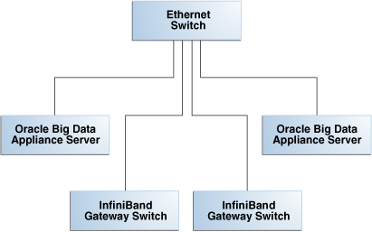

15 Using Oracle Integrated Lights Out Manager
Oracle Integrated Lights Out Manager (Oracle ILOM) is a preinstalled component of Oracle Big Data Appliance that you can use to monitor the servers and switches. You use Oracle ILOM in Configuring an Oracle Big Data Appliance Full Rack or Starter Rack.
This chapter contains the following sections:
- Oracle ILOM Overview
- Administrative Network Diagram
- Oracle ILOM IP Addresses for Oracle Big Data Appliance Components
- Connecting to Oracle ILOM Using the Network
- Connecting to Oracle ILOM Using a Serial Connection
- Backing Up and Restoring Oracle ILOM Settings
See Also:
-
For Sun Server X4-2L and Sun Server X3-2L servers, the Oracle Integrated Lights Out Manager 3.1 documentation library at
-
For Sun Fire X4270 M2 servers, Oracle Integrated Lights Out Manager 3.0 documentation library at
Parent topic: Maintenance
15.1 Oracle ILOM Overview
Oracle Integrated Lights Out Manager (Oracle ILOM) provides advanced service processor (SP) hardware and software that you can use to manage and monitor the servers and switches in an Oracle Big Data Appliance rack. Oracle ILOM dedicated hardware and software is preinstalled on these components. It automatically initializes as soon as power is applied.
Oracle ILOM enables you to actively manage and monitor servers in Oracle Big Data Appliance regardless of the operating system state, providing you with a reliable lights-out management (LOM) system.
With Oracle ILOM, you can proactively:
-
Learn about hardware errors and faults as they occur
-
Remotely control the power state of a server
-
View the graphical and nongraphical consoles
-
View the current status of sensors and indicators on the system
-
Determine the hardware configuration of your system
The Oracle ILOM service processor runs its own embedded operating system and has a dedicated Ethernet port, which together provide out-of-band management capability. In addition, you can access Oracle ILOM from the server operating system (Oracle Linux). Using Oracle ILOM, you can remotely manage Oracle Big Data Appliance as if you were using a local KVM.
15.1.1 Oracle ILOM Interfaces
Oracle ILOM supports two interfaces for accessing its features and functions. You can choose to use a browser-based web interface or a command-line interface.
Web Interface
The web interface enables you use a browser to log in to the SP, and then to perform system management and monitoring.
Command-Line Interface
The command-line interface (CLI) enables you to operate Oracle ILOM using keyboard commands. It adheres to industry-standard DMTF-style CLI and scripting protocols. Oracle ILOM supports SSH v2.0 and v3.0 for secure access to the CLI. From the CLI, you can reuse existing scripts and automate tasks using familiar interfaces.
Parent topic: Oracle ILOM Overview
15.1.2 Oracle ILOM Users
The Oracle Big Data Appliance servers are configured initially with only the root user.
The InfiniBand switches are configured with these additional users:
-
ilom-admin: Provides the write privileges needed to change the system configuration, without the full power ofroot. -
ilom-operator: Provides read-only privileges to monitor the system.
As root, you can create additional ILOM users if you want.
Parent topic: Oracle ILOM Overview
15.2 Administrative Network Diagram
Figure 15-1 illustrates the administrative Oracle ILOM network. It shows two of the 18 servers and the two Sun Network QDR InfiniBand Gateway Switches. The Cisco Ethernet management switch is connected to the servers and the InfiniBand switches.
Figure 15-1 Administrative Network in Oracle Big Data Appliance
Description of "Figure 15-1 Administrative Network in Oracle Big Data Appliance"
Parent topic: Using Oracle Integrated Lights Out Manager
15.3 Oracle ILOM IP Addresses for Oracle Big Data Appliance Components
You require at least one static IP address for service processor (Oracle ILOM) access. For the list of default Oracle ILOM IP addresses assigned to Oracle Big Data Appliance components at the time of manufacturing, see "Factory Network Settings".
After you reconfigure these IP addresses using Oracle Big Data Appliance Configuration Generation Utility, you must use the reconfigured IP addresses to access Oracle ILOM.
Parent topic: Using Oracle Integrated Lights Out Manager
15.4 Connecting to Oracle ILOM Using the Network
You can typically access Oracle ILOM using the network over an Ethernet connection. You must know the Oracle ILOM Ethernet address. Before system configuration, the address is the factory IP address setting. After system configuration, you can use either the component name or the IP address listed in the Installation Template. You can use either the CLI or the browser interface to access Oracle ILOM. Alternatively, you can launch a remote KVM session (Sun Fire X4270 M2-based racks only).
Note:
You can use this connection method when Oracle ILOM IP addresses can be accessed over the network. Oracle recommends that you use this connection method. See Configuring an Oracle Big Data Appliance Full Rack or Starter Rack
This section discusses the following topics:
Parent topic: Using Oracle Integrated Lights Out Manager
15.4.1 Connecting to the Command-Line Interface
See Also:
Oracle ILOM Daily Management -- CLI Procedures Guide at
Parent topic: Connecting to Oracle ILOM Using the Network
15.4.2 Connecting to the Web GUI
See Also:
-
Oracle ILOM 3.1 Quick Start at
http://docs.oracle.com/cd/E24707_01/html/E24528/gentextid-219.html#scrolltoc -
Oracle ILOM 3.0 Daily Management —Web Procedures Guide at
Parent topic: Connecting to Oracle ILOM Using the Network
15.5 Connecting to Oracle ILOM Using a Serial Connection
You servers: connecting to Oracle ILOM can connect to Oracle ILOM using a serial connection if you are unable to access it using the network due to any of the following problems:
-
Misconfiguration of the network
-
Misconfiguration of Oracle ILOM IP addresses
-
Misconfiguration of Cisco Ethernet switch ports
-
Sideband configuration issues
Parent topic: Using Oracle Integrated Lights Out Manager
15.5.1 Connecting to the Oracle ILOM of a Server
Parent topic: Connecting to Oracle ILOM Using a Serial Connection
15.5.2 Connecting to the Oracle ILOM of an InfiniBand Switch
Parent topic: Connecting to Oracle ILOM Using a Serial Connection
15.6 Backing Up and Restoring Oracle ILOM Settings
Oracle ILOM supports remote administration of the Oracle Big Data Appliance servers. This section explains how to back up and restore the Oracle ILOM configuration settings, which are set by the Mammoth utility.
See Also:
-
For Sun Server X4-2L and Sun Server X3-2L servers, the Oracle Integrated Lights Out Manager 3.1 documentation library at
-
For Sun Fire X4270 M2 servers, the Oracle Integrated Lights Out Manager 3.0 documentation library at
Parent topic: Using Oracle Integrated Lights Out Manager
15.6.1 Backing Up the Oracle ILOM Configuration Settings
Figure 15-3 Oracle ILOM 3.1 Configuration Backup

Description of "Figure 15-3 Oracle ILOM 3.1 Configuration Backup"
Parent topic: Backing Up and Restoring Oracle ILOM Settings
15.6.2 Restoring Oracle ILOM Configuration Settings
Parent topic: Backing Up and Restoring Oracle ILOM Settings